UX case study
Improving the UX of Green P Parking Machines
A research-driven redesign focused on clearer payment feedback, better screen visibility, and more reliable touch interactions.
Research synthesis, interaction design, rapid prototyping, and evaluation. I led key artifacts (persona, empathy map, scenarios), supported survey and interview work, and helped drive ideation and iteration.
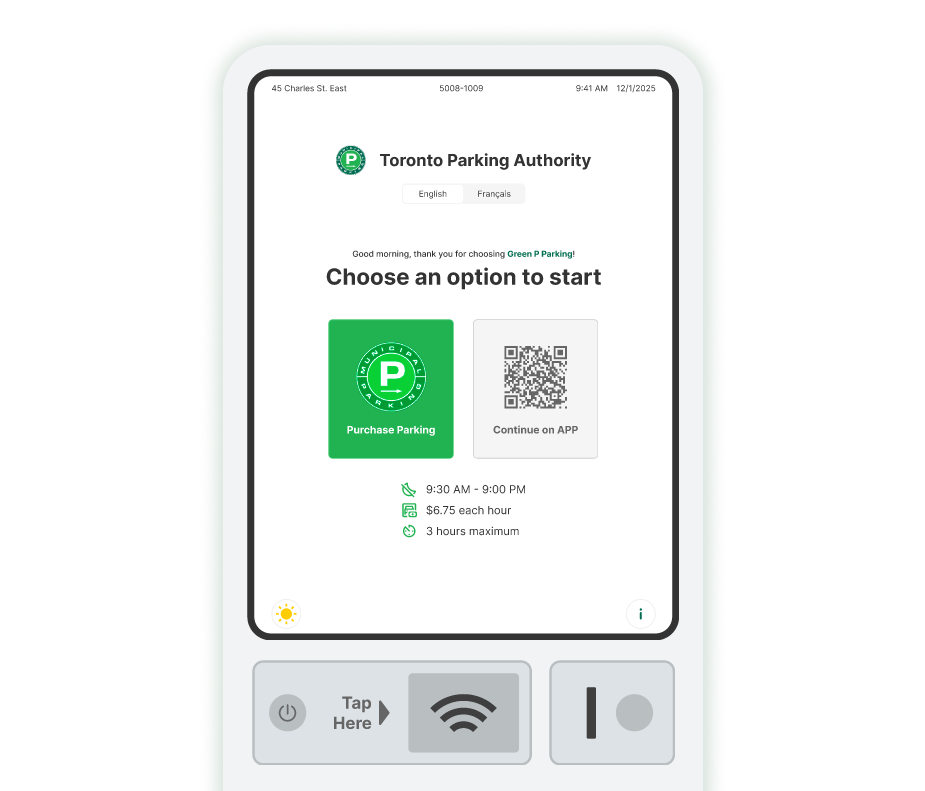
Problem and goal
Problem
Green P machines are often used in high-pressure moments: bad weather, bright sunlight, and short time windows. Users reported three recurring issues: poor screen visibility, unreliable touch response, and unclear payment confirmation.
Goal
Reduce uncertainty during payment by improving visibility, preventing mis-taps, and adding reliable confirmation. The experience should feel fast, safe, and easy to recover when something goes wrong.
Research
We combined a short online survey with semi-structured interviews to understand common breakdowns in real use. In total, we collected 46 survey responses and ran 15 interviews.
What we learned
- Visibility: glare and low contrast cause guessing and re-checking.
- Interaction reliability: laggy response leads to double taps and restarts.
- Feedback: unclear payment confirmation makes users worry about tickets or double charges.
- Recovery: when payment fails, users do not know the best next step.
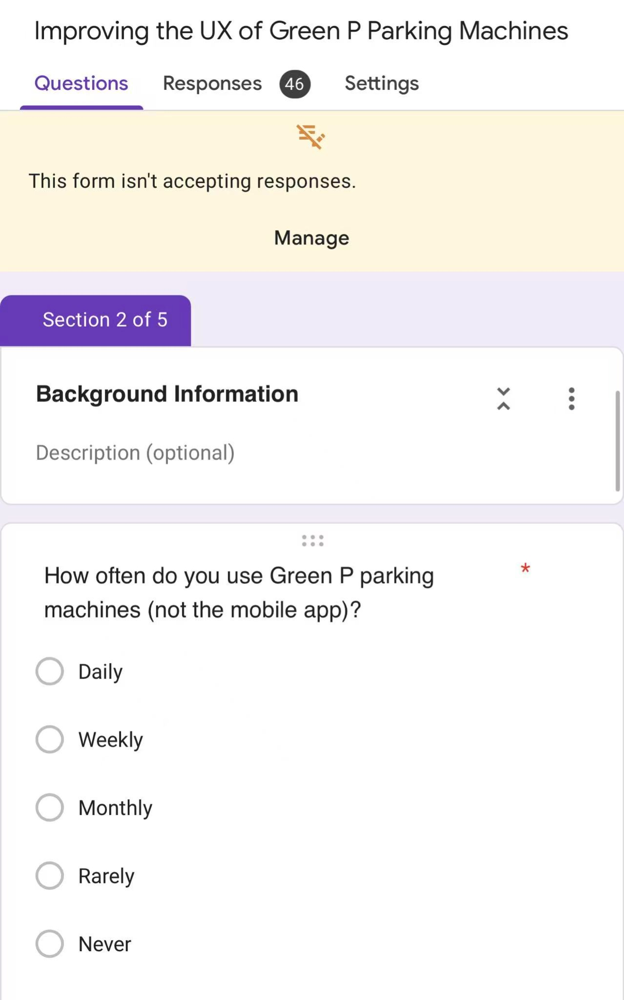
Synthesis artifacts
We turned raw research into clear, reusable artifacts for the team.
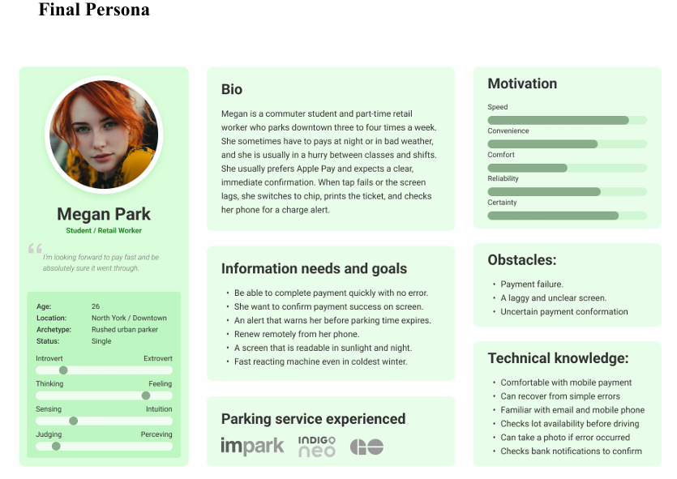
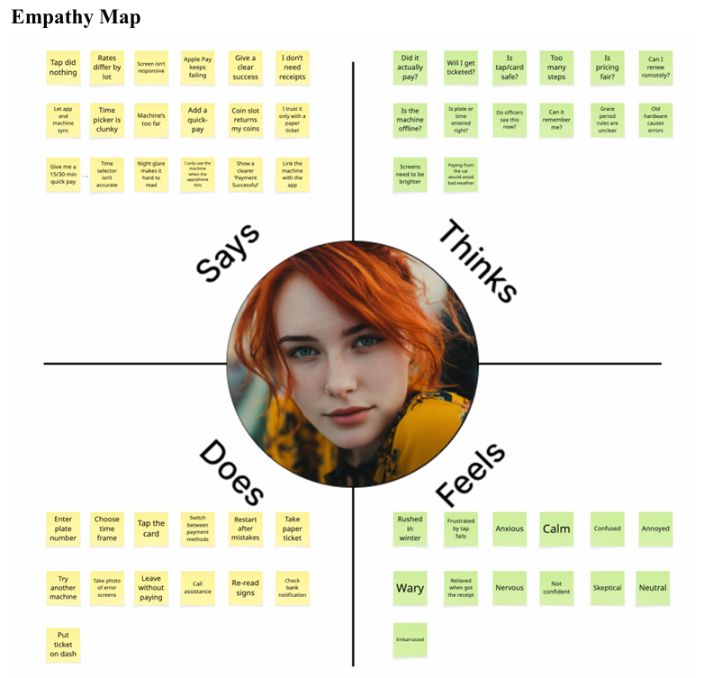
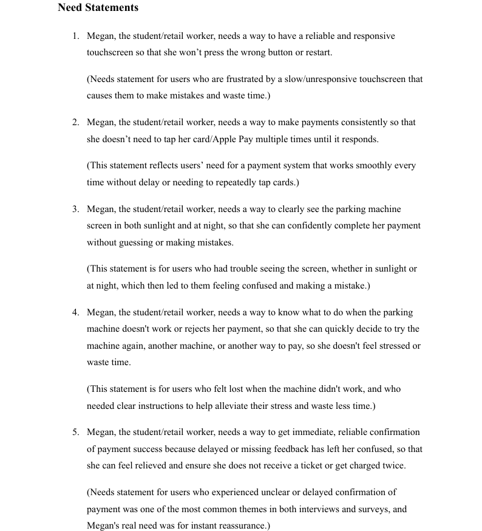
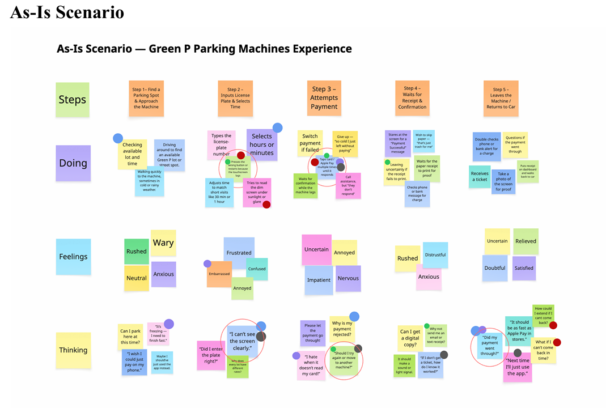
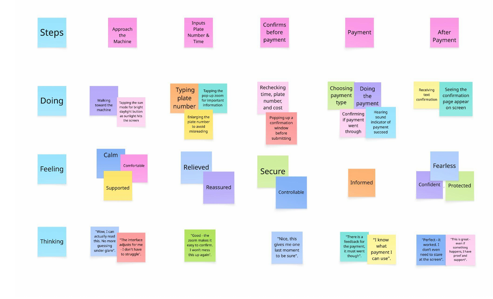
Ideation
We generated ideas, then voted using an impact vs feasibility grid to pick a focused set of improvements. This helped us move fast without losing the user problems.
- Quick wins: small changes that reduce errors right away.
- Home runs: larger changes that increase confidence and clarity.
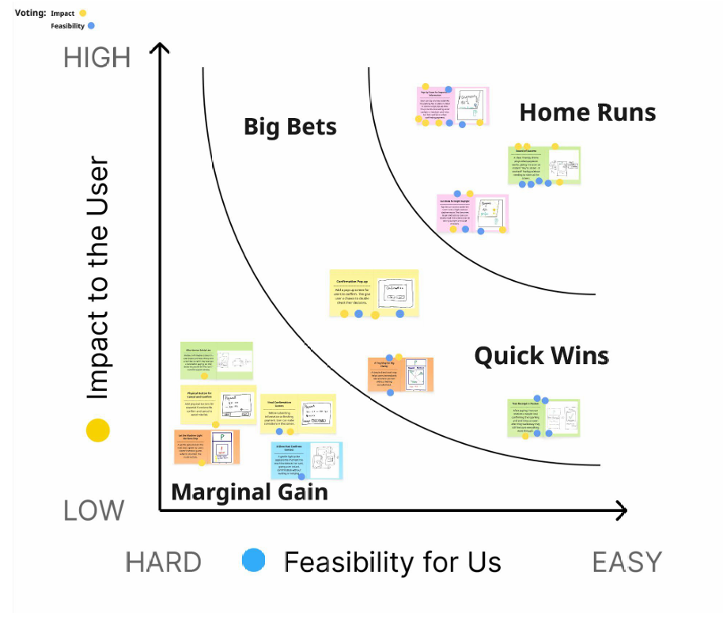
Prototyping
We moved from low-fidelity sketches to a clearer mid-fidelity flow that supports daylight readability, zoom, and confirmation.
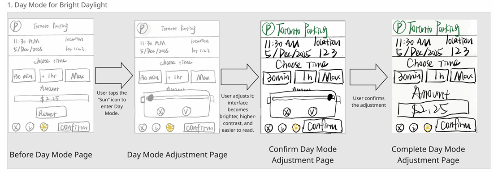
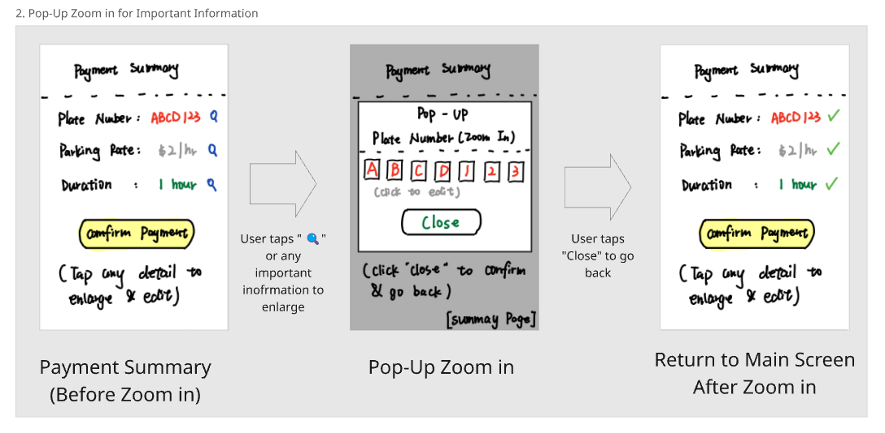
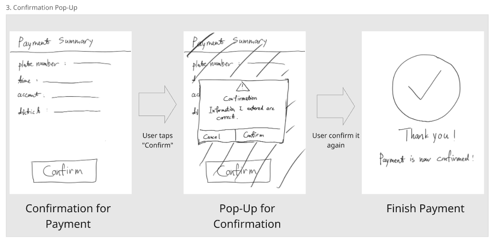
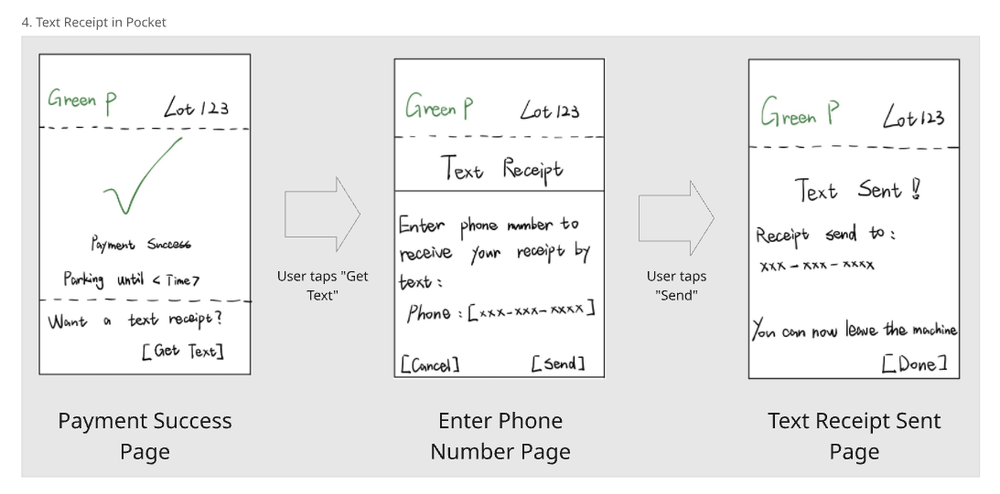
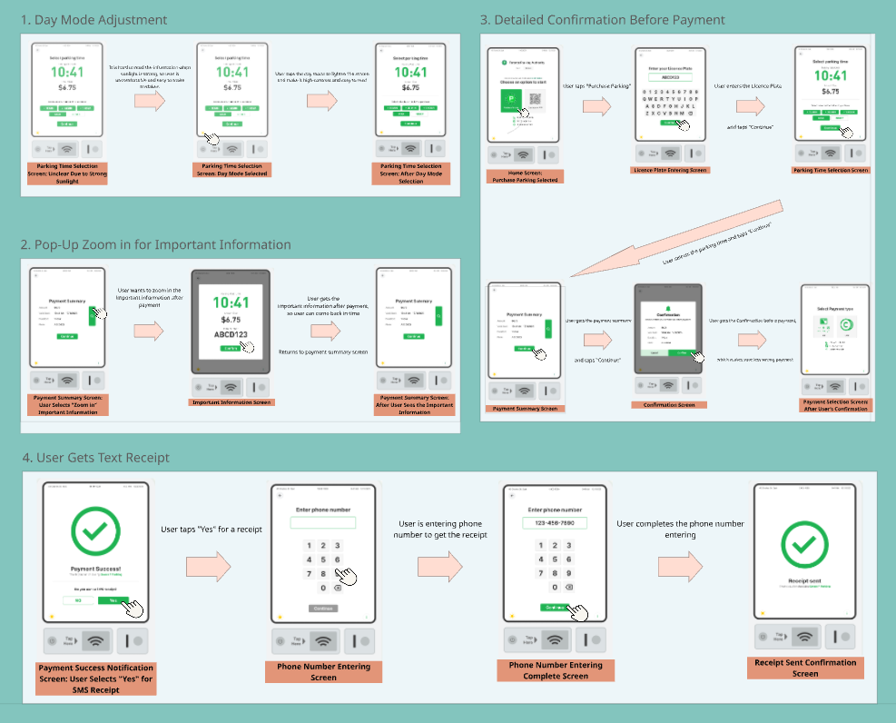
Usability evaluation
We tested the prototype to confirm whether key steps felt clear, fast, and error-proof. We also captured what worked, what to change, and new ideas.
- People liked the overall flow once they learned it.
- Users wanted more obvious controls before entering special modes.
- Confirmation needed to show key details before final submit.
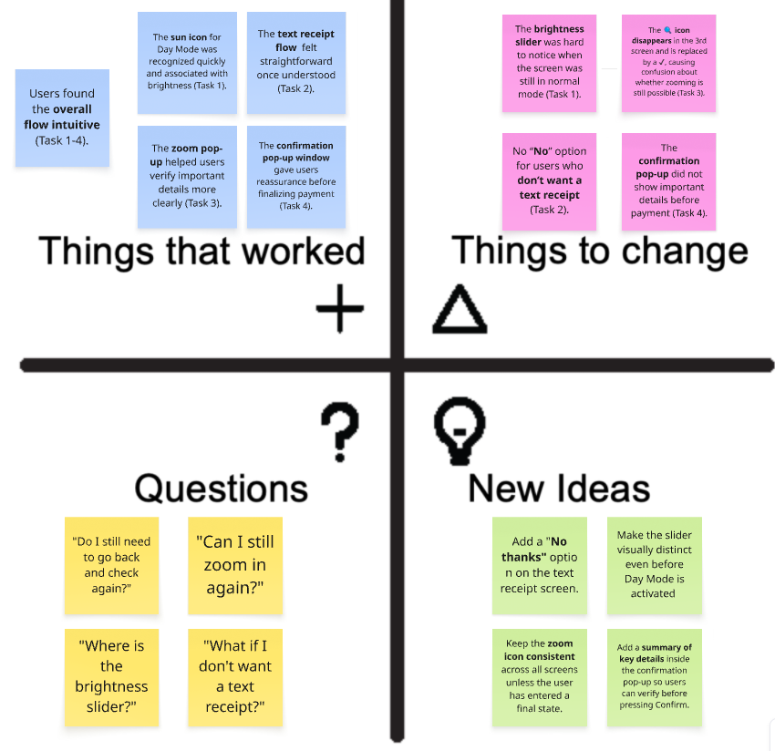
Final outcomes
1. Day Mode for bright daylight
One tap increases contrast and readability so users stop guessing under glare.
2. Pop-up zoom for key details
Tap any critical info to enlarge and verify, reducing misreads and wrong payments.
3. Confirmation before payment
A clear final check shows key details and prevents rushed mistakes.
4. Text receipt after payment
Immediate SMS confirmation gives reassurance even after walking away.
Reflection and what I learned
This project helped me connect the course tools to real-world constraints. A parking machine is a public system, so small usability gaps quickly turn into stress and errors.
Key takeaways
- Affordances and signifiers matter most under glare and time pressure.
- Feedback and confirmation reduce anxiety and prevent double actions.
- Constraints and error prevention beat long instructions.
- Design for recovery paths, not only the happy path.
- Evaluation is not decoration, it is how the design earns trust.
I want to keep using quick research cycles, clear synthesis, and iterative prototyping. In future work, I will measure success with both task outcomes (time, errors) and confidence signals (clarity, reassurance).